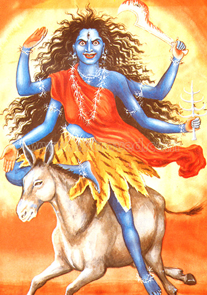

<html>
    <head>
        <title>Day 7</title>
        <meta name="viewport" content="width=device-width, initial-scale=1.0">
        <link rel="stylesheet" href="https://maxcdn.bootstrapcdn.com/bootstrap/3.4.0/css/bootstrap.min.css">
        <script src="https://ajax.googleapis.com/ajax/libs/jquery/3.4.1/jquery.min.js"></script>
        <script src="https://maxcdn.bootstrapcdn.com/bootstrap/3.4.0/js/bootstrap.min.js"></script>
     
        <link rel="stylesheet" href="day7.css">
        <script src="https://unpkg.com/ml5@0.4.3/dist/ml5.min.js"></script>
        <script src="https://cdnjs.cloudflare.com/ajax/libs/p5.js/1.0.0/p5.js"></script>
        <script src="https://cdnjs.cloudflare.com/ajax/libs/p5.js/1.0.0/addons/p5.sound.min.js"></script>
    </head>
    <body background="Happy-Navratri.jpg" class="col-lg-12 col-md-6 col-sm-6 col-xs-12"></body>
    <center>
        <h3 class="btn heading">
            Day 7
        </h3>
        <br><br><br>
        <h3 id="day1info" class="col-lg-12 col-md-6 col-sm-6 col-xs-12">
            The seventh day of Navratri is dedicated to goddess Kaalratri. The nine-day festival of Navratri is dedicated to nine forms of goddess Durga.
            <br><br><br>
            
            <br><br>
            <a class="back" href="index.html">Back</a>
        </h3>
    </center>
</html>